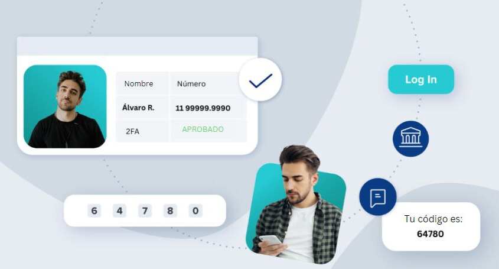
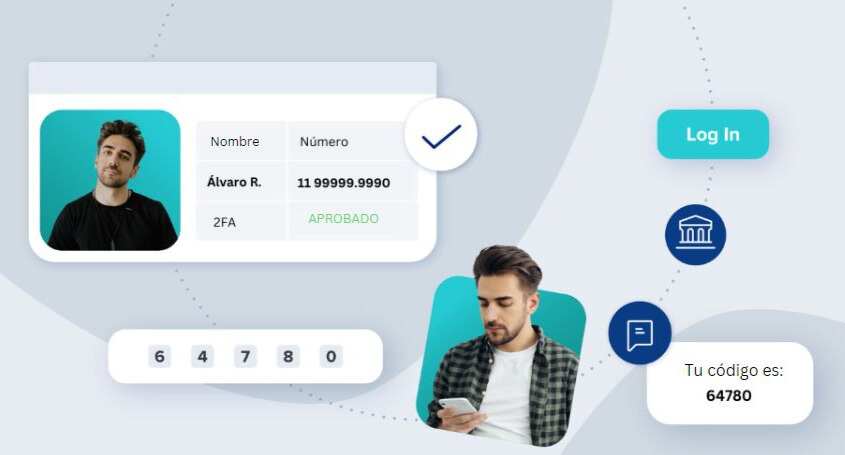

Comunidad colaborativa: Wigo conecta a personas dispuestas a ayudar con aquellas que necesitan asistencia en diversas tareas, desde compras de supermercado hasta envios de documentos importantes. Puedes encontrar voluntarios dispuestos a colaborar.
Conveniencia: Si tienes un favor que no puedes hacer tú mismo debido a tiempo o distancia, Wigo te brinda una solución práctica para encontrar a alguien que pueda hacerlo por ti.
Comunidad colaborativa: Wigo conecta a personas dispuestas a ayudar con aquellas que necesitan asistencia en diversas tareas, desde compras de supermercado hasta envios de documentos importantes. Puedes encontrar voluntarios dispuestos a colaborar.
Conveniencia: Si tienes un favor que no puedes hacer tú mismo debido a tiempo o distancia, Wigo te brinda una solución práctica para encontrar a alguien que pueda hacerlo por ti.  Seguridad y confianza: La plataforma de Wigo generalmente incluye medidas de seguridad y verificación de perfiles para garantizar la confiabilidad de los usuarios, lo que te permite confiar en las personas que te ayudarán. 
>
Variedad de tareas: Puedes utilizar Wigo para una amplia variedad de tareas y favores, lo que te brinda flexibilidad en la asistencia y mas tiempo para tu familia.
Seguridad y confianza: La plataforma de Wigo generalmente incluye medidas de seguridad y verificación de perfiles para garantizar la confiabilidad de los usuarios, lo que te permite confiar en las personas que te ayudarán. 
>
Variedad de tareas: Puedes utilizar Wigo para una amplia variedad de tareas y favores, lo que te brinda flexibilidad en la asistencia y mas tiempo para tu familia.